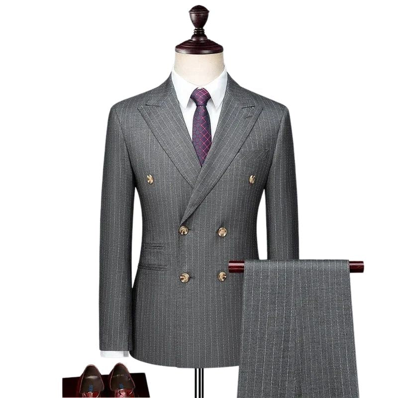
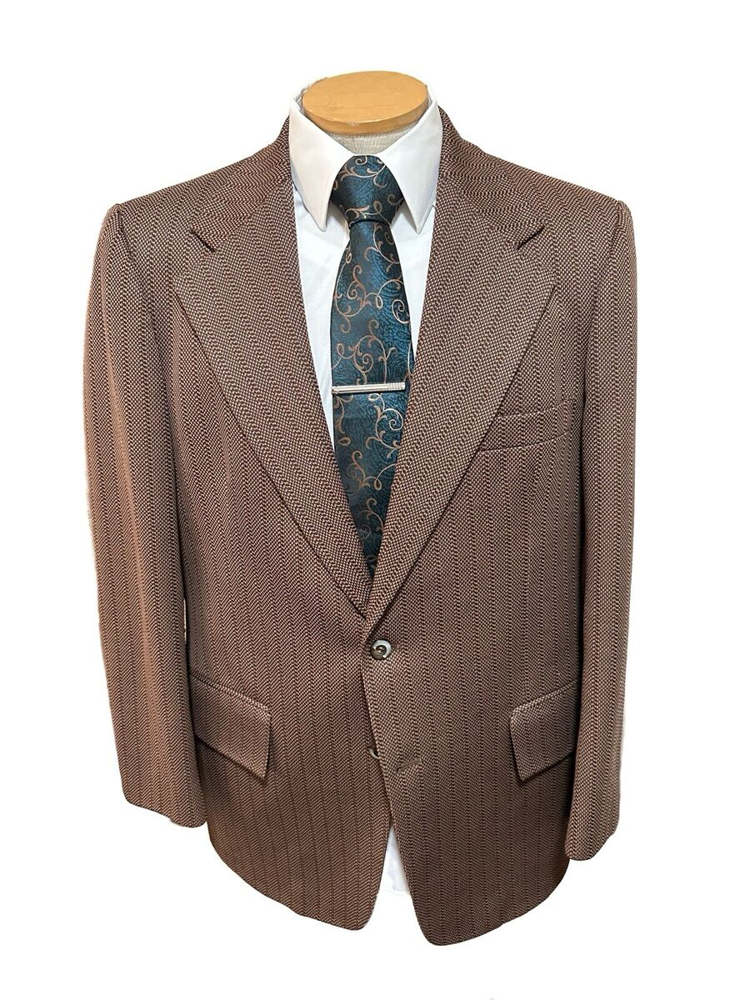
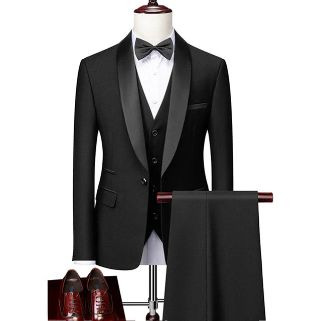

Transpassado cinza claro R$850.00
Ideal para eventos formais e profissionais. Inclui ternos de 2 ou 3 peças, geralmente em cores neutras (preto, cinza ou azul-marinho). Exemplo: Ternos de lã ou tecidos nobres.

Paletó casual clássico marrom claro desenhado R$760.00
Usado em ambientes descontraídos ou eventos diurnos. Feito de materiais leves, como linho ou algodão, em cores mais claras ou estampadas. Exemplo: Terno de algodão bege ou de linho.

Smoking (black-tie) R$900.00
Para eventos de gala e black-tie. Acompanhado de gravata borboleta, geralmente com lapela em cetim.